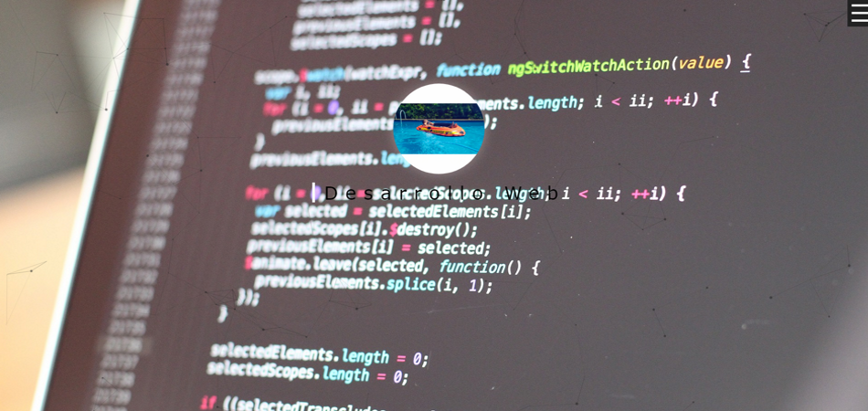

Mi 1º Pagina web
He creado esta pagina web, es una pagina destina a mi propio portfolio, usando HTML5, CSS y JS
Ver proyectoNacido en Logroño, en 1998, estudie en en el Instituto Sagrado Corazón Jesuitas la modalidad de Sistemas Microinformáticos y Redes y seguidamente me meti en el grado superior de Desarrollo de Aplicaciones Web
Leér másTodo empezó con la ideología de que el mundo de la tecnología que estaba en pleno auge, así que investigue cosas y vi que me entretenía, que tenia futuro y mucho por lo que investigar e innovar, ademas me di cuenta que se puede estudiar en mi cuidad, ese es el motivo por el que me encuentro aquí, haciendo esta pagina web.
- Mario Arnedo
He creado esta pagina web, es una pagina destina a mi propio portfolio, usando HTML5, CSS y JS
Ver proyectoComo cada año, GDG La Rioja crea un evento a gran escala dirigidos a desarrolladores, tanto de Front como de Back, este año he estado metido en el diseño y en la maquetacion de la web
Ver proyectoHe creado esta web, para un luchador de UFC, Conor McGregor, esta hecha a base de HTML5, CSS3 y JS
Ver proyectoHe creado esta web para clase, se trata de un restaurante situado aqui, la web esta basada en el uso de Bootstrap4, acompañado con CSS, HTML5 y JS
Ver proyecto